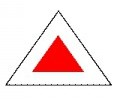

Atracţii turistice
Stanca Soimilor
După traversarea podului de peste râul Olt, drumul se bifurcă, spre stânga putem ajunge la camping şi la mofetă (traseul nr. 2), iar spre
dreapta,
unde sunt amplasate și 2 panouri informative, continuă traseul marcat cu triunghi roşu, care urcă spre Piatra Şoimilor. Marcajul, după
numai 25 metri,
traversează drumul forestier (traseul cu nr. 4), trece pârâul Corbului şi urcă pe 18 serpentine pe versantul abrupt al Pietrei
Şoimilor.
După o urcare de cca. 45 minute, pădurea se rarefiază şi ajungem în spatele unei stânci mai mici, aflată la capătul de sud al Pietrei
Şoimilor. Puţin mai spre
dreapta părăsim poteca şi după cam 10 m urcăm cu grijă pe o pantă abruptă şi ajungem la un mic popas, de aici mai mergem 5 minute spre
nord până când ajungem la
puctul de belvedere Piatra Şoimilor, unde se află și crucea de lemnn. De aici putem admira priveliştea oferită de stațiune, de defileul
Oltului şi de masivul Ciomat.
Pe parcursul traseului putem să ne informăm cu ajutorul celor 10 panouri informative montate pe copaci.

Marcaj: triunghi roşu, panouri informative.
Durată: 1 – 2 h.
Distanţa de parcurs: 2,5 km.
Diferenţă de nivel: 189 m.
În imediata vecinătate a oraşului Băile Tuşnad, se află Rezervația Naturală Protejată Piatra Şoimilor (cu o suprafaţă de doar 1,5 hectare)
ce se încadrează în lanţul eruptiv al Munţilor Harghitei de Sud și este situată pe versantul estic al conului Muntelui Pilişca (824 m
altitudine),
cu aflorimente de andezite (rocă vulcanică) sub formă de turnuri şi se înălţă deasupra zonei cu 50-60 metri.
Aceasta face parte dintr-un peisaj de munte acoperit de vegetaţie forestieră mixtă, foioase-răşinoase şi unde se dezvoltă un număr mare de
specii
floristice adaptate la acest mediu. Dintre acestea se remarcă un endemism local (întâlnit numai în judeţul Harghita, pe stâncării)
Hieracium telekianum –
o specie de vulturică (vulturica lui Teleki) cu areal foarte restrâns şi foarte spectaculoasă. Din fauna prezentă, menţionăm: veveriţa,
pârşul mare, căpriorul,
ursul brun, şi ocazional apărând pisica salbatică, lupul şi râsul.
De asemenea, diverse specii de păsări îmbogăţesc prin prezența lor zona, spre exemplu: huhurezul, buha, ciocănitoarea pestriţă mare,
șorecarul comun,
piţigoiul de munte, piţigoiul de brădet. Dintre reptile enumerăm: şopârla de munte sau şopârla de câmp.